Experiência
O Grupo Time Stop nasceu em 1994 e desde então atua na digitalização de acervos empresariais, escolares e culturais.
Garanta a longevidade da sua história empresarial no Jardim Bela Vista, Santo André. Especialistas em digitalização de alta fidelidade, transformamos fitas VHS, rolos de filme, vinis e fotografias antigas em arquivos digitais acessíveis e seguros. Proteja o patrimônio do seu negócio contra a ação do tempo e modernize seu acervo com conversão para nuvem, HD ou pen drive, assegurando que o legado da sua marca esteja sempre disponível e protegido.
Solicite avaliaçãoValorize o patrimônio da sua marca no Jardim Bela Vista, Santo André. Com nossa digitalização especializada, transformamos fotos, fitas VHS, discos de vinil e rolos de filme em arquivos digitais de alta performance. Oferecemos conversão direta para pen drive, HD ou nuvem, permitindo que o acervo histórico do seu negócio seja facilmente acessado para consultas ou projetos criativos, livre dos riscos de deterioração e totalmente organizado para o futuro.
O Grupo Time Stop nasceu em 1994 e desde então atua na digitalização de acervos empresariais, escolares e culturais.
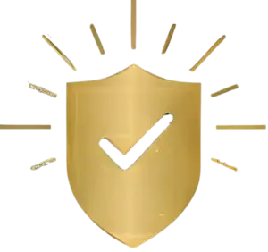
Nosso compromisso é com a segurança, a qualidade e a preservação da história de cada cliente.
Avaliação 5 estrelas no Google e parcerias com instituições e empresas renomadas.
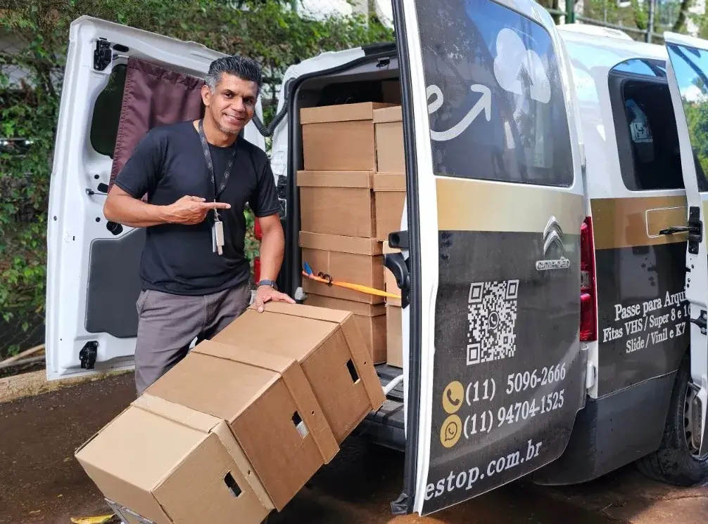
Líder em digitalização de acervos no Jardim Bela Vista, Santo André, oferecemos máxima segurança e sigilo na modernização da sua memória corporativa. Com rigor técnico, convertemos fitas, filmes, áudios e fotografias para nuvem, pen drive ou HD externo. Proteja o patrimônio histórico da sua marca contra o desgaste natural e mantenha seu legado organizado e acessível para o futuro digital, contando com suporte especializado e profissional.
solicitar avaliaçãoPreserve o patrimônio histórico do seu negócio com nossa especialidade em digitalização no bairro Jardim Bela Vista. Somos a principal referência em Santo André para a conversão de arquivos analógicos em formatos digitais de alta fidelidade. Através de uma metodologia rigorosa, garantimos a organização técnica e segurança total na migração de fitas, fotos e filmes para nuvem, HD ou pen drive. Evite a perda do seu legado institucional e modernize seu acervo corporativo com sigilo absoluto e acesso imediato.
Solicitar Orçamento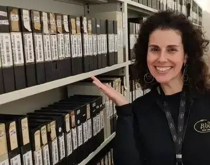
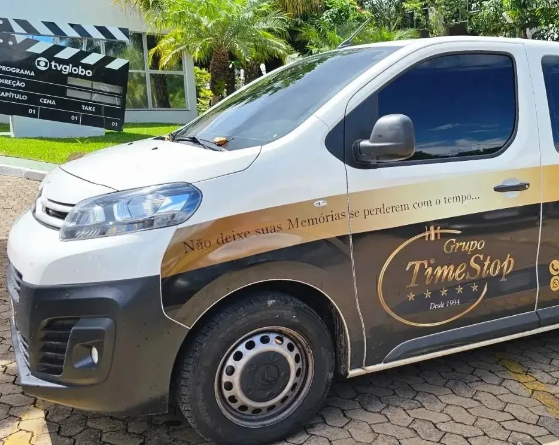
Evite a deterioração irreversível da memória da sua organização no Jardim Bela Vista, Santo André. Especialistas em digitalização de acervos, atuamos na recuperação e conversão de registros em VHS, rolos de filme, fotos e vinis antes que a ação do tempo comprometa sua integridade. Transformamos suas mídias analógicas em arquivos de alta resolução para nuvem, HD ou pen drive, assegurando a salvaguarda definitiva do seu patrimônio histórico com um serviço profissional, sigiloso e de máxima fidelidade técnica.
Agendar Visita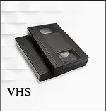
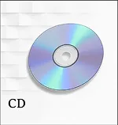
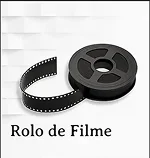
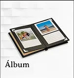
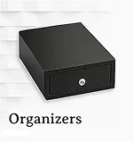
Organização de todo o material em formato digital seguro e navegável.
chame agora!Somos Digital Organizers — o "Personal Organizer" para o seu mundo digital: catalogamos, etiquetamos e entregamos o acervo pronto para uso e consulta.
Equipe especializada e treinada.
Atendimento em todo o Brasil.
Processos éticos e documentação controlada.
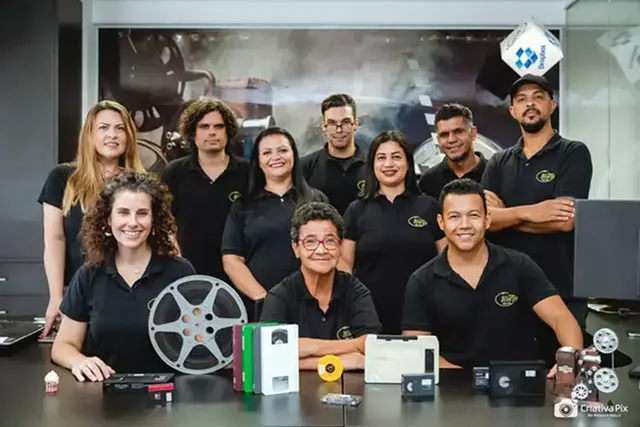
Minha experiência não poderia ter sido a melhor que já vivi, reviver passado dos meus filhos nossas viagens a infância deles, adorei o trabalho que Blue Ray fez com minhas fitas, todos dias vejo um pouco por que são muitas lembranças muitas viagens que jamais podemos reviver a não ser assistindo as fitas! Um passado dos meus filhos de 30 e 24 que eternizei com muito amor e também vê los assistindo aquilo que não se lembram mais não tem preço!! Rindo da própria travessuras de meninos só me fez parabenizar o trabalho da Blue Ray com as minhas jóias 🙏🏻 gratidão eterna! - sucesso
Fiquei tão feliz de ter encontrado a Bluray para recuperar a filmagem do meu filho de 1 ano. A fita tinha 30 anos e estava tão cheia de moço e tão colada que eu achei que jamais ia conseguir ver a única filmagem que tinha dele. Mas eles conseguiram!! Ficou ótimo, e ainda me devolveram a fita de VHS como nova. O atendimento deles é maravilhoso , estão sempre preocupados com a nossa satisfação. Adorei!! Nota 1000! Não tem outra empresa pra fazer esse trabalho. Mesmo um profissional tendo me cobrado tão barato, eu ainda preferi fazer com quem eu realmente sabia que podia confiar. Eles não são amadores e pegam a sua relíquia e transformam em momentos inesquecíveis!! São expert no assunto, e poderia pagar muito mais pela certeza de que eu teria a chance de ver meu filho e família novamente ! Equipe Bluray muito obrigada pelo excelente trabalho!
A Grupo Time Stop nos devolveu uma alegria de infância que estava esquecida. Eu e meus pais, irmãos, primos, tios passávamos horas vendo como éramos felizes. Como se fosse um filme alegre dos anos 90 em que os personagens aramos nós mesmos. Voltamos a uma união e nos fez entender a nós mesmos (quase como uma terapia. Rs) O trabalho cuidadoso e de qualidade. Fez toda a diferença. Muito obrigada Grupo Time Stop
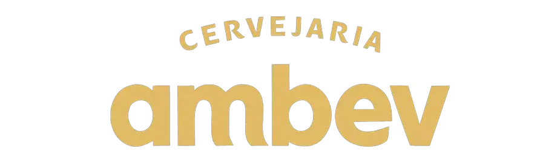
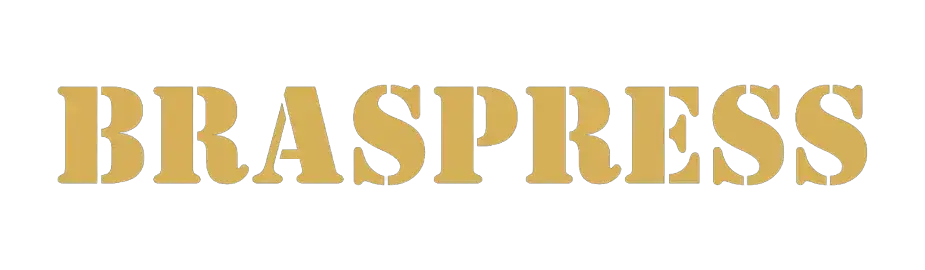
Somos a Melhor, Maior e Mais Antiga Empresa do Brasil no segmento, pronta para Recuperar e Eternizar suas Memórias para Formato Digital com Total Segurança, Qualidade e Confidencialidade!
digitalização de acervos empresariais no bairro Jardim Bela Vista Santo André, conversão de fitas VHS Jardim Bela Vista, digitalizar fotos antigas Santo André, converter fita cassete para digital Jardim Bela Vista, digitalização de discos de vinil Jardim Bela Vista, conversão de rolo de filme 8mm Jardim Bela Vista, áudio de rolo para digital Santo André, serviço de digitalização de memórias empresariais Jardim Bela Vista, converter fotos para nuvem e pen drive Jardim Bela Vista, recuperação de arquivos analógicos Santo André, preservação de patrimônio histórico empresarial Jardim Bela Vista, digitalização de negativos e slides Jardim Bela Vista Santo André